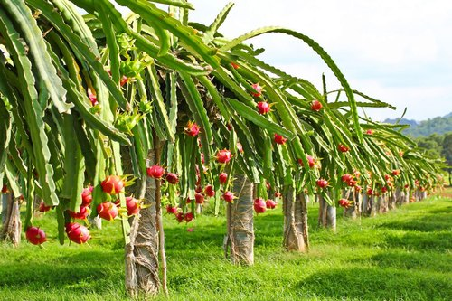

Histórico
História
A pitaya é comumente conhecida no inglês como "Dragon Fruit" (Fruta do Dragão), nome utilizado desde 1963, tendo uma povável origem resultante da aparência de sua casca, que se assemelha às escamas de um dragão. O nome "Pitahaya" e "Pitaya" são de origem do México. A Pitaya é uma fruta nativa do sul do México e da América Central. Porém, atualmente a fruta é cultivada em algumas reigiões asiáticas, nos Estados Unidos, no Caribe, na Austrália e em várias regiões tropicais ao redor do mundo, como o Brasil. No Brasil, o cultivo da pitaia começou na década de 90, com a produção concentrada no estado de São Paulo.
Cultivo
 As sementes crescem bem em uma mistura de solo de adubo ou vasos – mesmo como uma planta interna em vasos. Cactos de pitaya geralmente germinam depois entre 11 e 14 dias após o plantio raso. Como são cactos, o excesso de água é uma preocupação para os produtores domésticos. À medida que seu crescimento continua, essas plantas de escalada encontrarão algo para subir, o que pode envolver a colocação de raízes aéreas para baixo dos galhos, além das raízes basais. Uma vez que a planta atinja um peso maduro de 4,5 kg, a planta pode florescer.
No Brasil, as espécies de pitaya mais plantadas são H. undatus e H. polyrhizus, e a região Sudeste é a principal produtora. Em 2013, foram comercializadas mais de 319 toneladas de pitaya, produzidas em São Paulo, Minas Gerais, Ceará, Paraná e Goiás, com destaque para os estados de São Paulo, responsável por aproximadamente 92% (em torno de 270 toneladas) da quantidade comercializada, seguido de Minas Gerais, com pouco mais de 5,62% (16.380 kg), e Ceará (1,16% do total comercializado, equivalente a 3.399 kg). No Ceará, na região da Chapada do Apodi, existem aproximadamente 15 hectares de pitaya em cultivo comercial. A propagação de pitaya é feita usualmente via estaquia, o que proporciona uniformidade, manutenção do genótipo e rápido alcance da fase adulta com frutificação entre 1 e 2 anos de idade das plantas. Para obter boa produtividade, é fundamental que as plantas sejam de qualidade, e dessa forma é importante que se dê atenção à fase de formação das mudas.
Por se tratar de uma fruta exótica e bem valorizada tem alcançado alto valor de mercado, oportunizando alta renda por área cultivada, sua produtividade pode alcançar de 25 a 30 toneladas por hectares em condições climáticas ideais, após os três anos de implantação. As flores de Pitaya florescem durante a noite pois dependem de polinizadores noturnos, como morcegos ou mariposas para fertilização. A auto-fertilização não produzirá frutos em algumas espécies, e embora a reprodução cruzada tenha resultado em várias variedades "auto-férteis", polinizar cruzadamente com uma segunda planta geneticamente distinta da mesma espécie geralmente aumenta o conjunto de frutas e a qualidade. Isso limita a capacidade dos produtores domésticos de produzir o fruto. No entanto, as plantas podem florescer entre três e seis vezes em um ano, dependendo das condições de crescimento. Como outros cactos, se um pedaço saudável da haste é quebrado, ele pode criar raízes no solo e se tornar sua própria planta.
Espécies
Na América Latina, o termo “pitaya” é aplicado para denominar diferentes espécies de cactáceas produtoras de frutos, principalmente as pertencentes aos gêneros Cereus, Hylocereus, Selenicereus e Stenocereus. Seus frutos são considerados exóticos, o que tem despertado interesse de produtores e consumidores.
O género Hylocereus é conhecido como a pitaia vermelha, planta cujo fruto apresenta casca vermelha sem espinhos. O género Selenicerius é identificado como pitaia amarela, pelo fato de possuir fruto amarelo com espinhos. As plantas da subfamília Hylocereae podem ser encontradas nos locais de origem em bosques, trepando as árvores, fixando-se a estes tutores por meio das raízes adventícias. Atualmente, o cultivo da pitaia estende-se a várias partes do globo, desde o continente Asiático, passando pela Oceânia e Europa, até à América do Norte.
Segue abaixo algumas frutas da família pitaya:
Hylocereus undatus
Casca Vermelha e Polpa Branca
A Hylocereus undatus (conhecida como pitaia vermelha), é uma espécie de pitaia pertencente ao gênero Hylocereus e a família Cactaceae, é disseminada na América Latina e cultivada nos quatro continentes, e pode ser encontrada desde Israel até a China.
É um cacto profusamente ramificado de hábito hemiepifítico ou terrestre e de rastejar ou escalar rolamentos. Possui dois tipos de raízes uma no solo como suporte e receptores de água e nutrientes do solo, e outras raízes aéreas para aderir a um suporte, para que possa chegar a mais de 10 m. As hastes verdes são segmentadas com um comprimento de poucos cm a mais de 5 m de comprimento em plantas adultas. Eles têm três rostos angulares com margens onduladas que se tornam córneas com a idade. As aréolas, separadas umas das outras cerca de 4,5 cm, têm de 1 a 3 espinhas de acicular a subconômicas, marrom-acinzentado a preto e até 1 cm de comprimento, embora geralmente apenas 2 a 4 mm. As flores, brancas com tépalas esverdeadas, têm cerca de 25 a 30 cm de comprimento. Elas são perfumadas, noturnas e duram uma única noite. A fruta Pitaya é uma fruta entre 6 a 12 cm de diâmetro. A polpa é transparente com inúmeras pequenas sementes pretas dentro.
Em alguns locais do Brasil, sua flor é conhecida como rainha-da-noite.
Hylocereus polyrhizus
Casca Vermelha e Polpa Vermelha
A Hylocereus polyrhizus é também chamada de pitaya vermelha em razão de seus frutos possuírem casca vermelha com polpa vermelho-púrpura brilhante. Ela é uma espécie botânica de cactus, nativa da América Central e do noroeste da América do Sul . A espécie é cultivada comercialmente pelo seu fruto, e também por ser uma planta ornamental com belas flores.
Cultivo: É fácil de crescer, de rápido crescimento como epífitas ou xerófita . Você precisa de um composto com muito húmus e umidade suficiente no verão. não deve ser inferior a 10 ° C no inverno. Ela pode crescer em sombra parcial ou a pleno sol. luz extra no início da primavera irá estimular a produção de botões florais. Ele floresce no verão ou no outono.
Selenicereus megalanthus
Casca Amarela e Polpa Branca
Selenicereus megalanthus é um cacto espécies no género Selenicereus que é nativo para o norte da América do Sul , onde é conhecido, juntamente com o seu fruto, com o nome de Pitahaya . A espécie é cultivada comercialmente para sua fruta amarela, mas é também uma impressionante trepadeira ornamental com talvez as maiores flores de todos os cactos . A fruta amarela tem espinhos, ao contrário dos frutos vermelhos Dragão ( H. undatus, H. polyrhizus, H. costaricensis), e é comumente conhecido como "Fruta amarela do dragão", "pitahaya amarela" ou "pitaya amarela".
Para seu cultivo, precisa de um composto que contém uma abundância de húmus e umidade suficiente no verão. Não deve ser mantida oabaixo de 8 ° C (46,5 ° F) no inverno. Podem ser cultivadas em semi-sombra, mas a melhor condição seria em pleno sol, sendo que luz extra no início da primavera estimula a brotação. As flores costumam brotar em junho a outubro.
Propriedades
A textura da fruta às vezes é comparada com a do kiwi por causa de suas sementes pretas e crocantes. O óleo de semente contém ácidos graxos, ácido linoleico e ácido tolenico. A fruta de dragão é usada para saborear e colorir sucos e bebidas alcoólicas, como "Dragon's Blood Punch" e "Dragotini". As flores podem ser comidas ou mergulhadas como chá.
Entre as diversas propriedades da pitaya a que mais se destaca é sua propriedade termogênica que potencializa a queima de gordura favorecendo o emagrecimento. A fruta mais utilizada para esse fim é a com polpa vermelha.
No entanto as propriedades nutricionais não se diferenciam entre a fruta rosa, a vermelha ou a amarela, seja qual for a pitaya consumida sua alimentação será rica contando com todos os nutrientes da fruta dragão e também: minerais essências, vitamina do complexo B e vitamina C. Além de dispor das propriedades da pitaya que combatem o colesterol ruim.
As propriedades medicinais da Pitaya são velhas conhecidas dos povos nativos do Velho Mundo, e hoje sabe-se que são ricas em fibras (em Taiwan diabéticos a usam como substituo para o arroz) e minerais (sendo as amarelas mais abundantes em zinco e as vermelhas em ferro), possuem quantidade significativa de antioxidantes e previnem radicais livres. Há estudos que considerem que o consumo de pitaya pode aumentar a excressão de metais pesados, diminuir colesterol e regular a pressão sanguínea. Comê-las regularmente alivia doenças crônicas do sistema respiratório.
| Componentes | Quantidade por 100g de Pitaya |
|---|---|
| Energia | 50 calorias |
| Água | 85,4 g |
| Proteínas | 0,4 g |
| Gorduras | 0,1 g |
| Carboidratos | 13,2 g |
| Fibras | 0,5 g |
| Vitamina C | 4 mg |
| Cálcio | 10 mg |
| Fósforo | 16 mg |
Benfícios da Fruta Pitaya
- Combate o colesterol, pois é rica em Ômega 3
- Combate a hipertensão arterial
- Auxilia nos regimes alimentares
- Auxilia no metabolistmo
- Regula o diabetes
- Fortalece o sistema imunológivo, elimina os radicais livres
- Tem ótimos benefícios para a flora intestinal
- Elimina metais pesados
- Auxilia a visão e a belea da pele
- Previne o câncer de cólon
- Auxilia no processo digestivo
- Protege as células do organismo
- Laxante suave